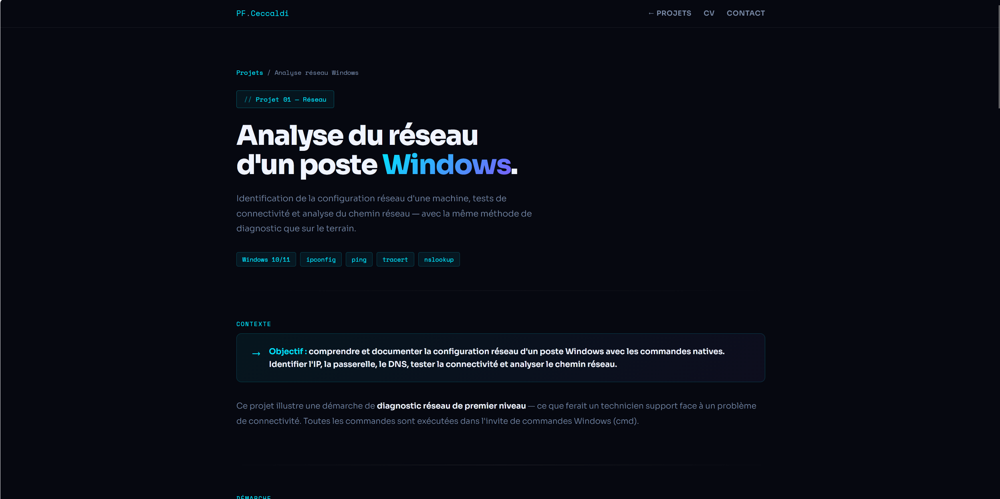

// Projet 01 — Réseau
Analyse du réseau d'un poste Windows
Identification de la configuration IP d'une machine (ipconfig), tests de connectivité progressifs (ping loopback, passerelle, internet, DNS) et analyse du chemin réseau (tracert) — avec interprétation documentée de chaque résultat.
Voir le projet →